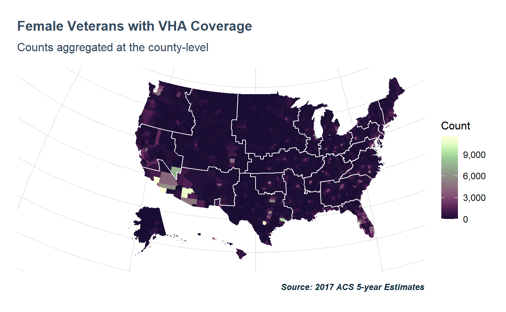
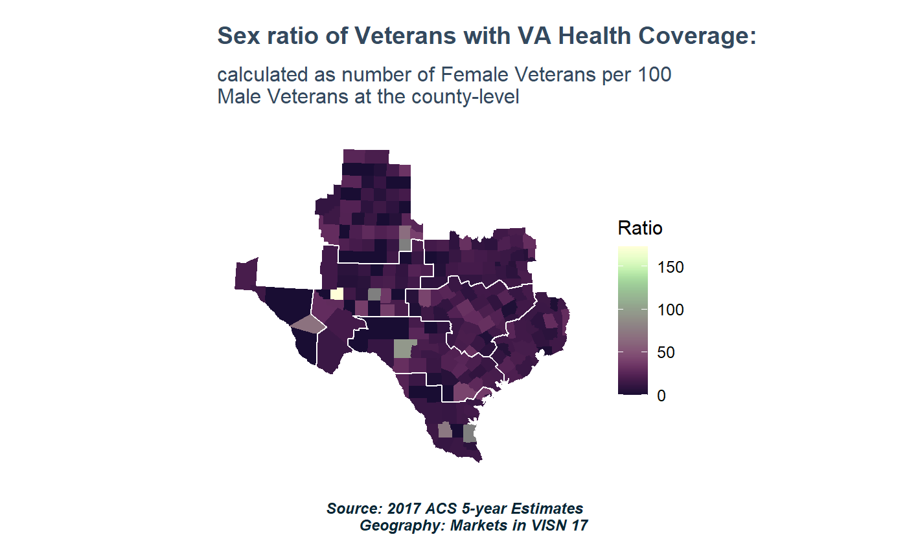

To get the most out of tidyVA, it is easiest to load the tidyverse. For fetching data from the Census API load tidycensus (this will require you first sign up for an API key).
library(ggplot2)
library(tidycensus)
library(tidyVA)
data("county")
countyshift <- shift_geo(county)
#> Please note: Alaska and Hawaii are being shifted and are not to scale.VA Healthcare Coverage at the county-level
vars <- c(Male18to64 = "C27009_007E", Male65over = "C27009_010E",
Female18to64 = "C27009_017E", Female65over = "C27009_020E")
VAHC <- get_acs(geography = "county",
variables = vars,
output = "wide", year = 2017) %>%
mutate(TotalMale = Male18to64 + Male65over, TotalFemale = Female18to64 + Female65over,
Total = TotalMale + TotalFemale)
#> Getting data from the 2013-2017 5-year ACS
VAHC <- tigris::geo_join(countyshift, VAHC, by_sp = "FIPS", by_df = "GEOID")
data("visn")
visn <- visn %>% shift_geo() %>%
group_by(VISN) %>% summarise()
#> Please note: Alaska and Hawaii are being shifted and are not to scale.plot <- function(var){
ggplot() +
geom_sf(data = VAHC, aes(fill = var), color = NA) + #county layer
geom_sf(data = visn, fill = NA, color = "#ffffff", size = .5) + #visn layer
scale_fill_viridis_c(labels = scales::comma) +
theme_va(map = TRUE) + labs(caption = "Source: 2017 ACS 5-year Estimates", fill = "Count")
}
plot(VAHC$Total) + ggtitle("Total Veterans with VHA Coverage")
plot(VAHC$TotalFemale) + ggtitle("Female Veterans with VHA Coverage",
subtitle = "Counts aggregated at the county-level")
Sex ratio in the population tends to be 1:1, but that’s not the case among Veterans.
ggplot() +
geom_sf(data = VAHC, aes(fill = (TotalFemale/TotalMale)*100), color = NA) +
geom_sf(data = visn, fill = NA, color = "#ffffff", size = .5) +
scale_fill_viridis_c(labels = scales::comma) +
labs(caption = "Source: 2017 ACS 5-year Estimates", fill = "Ratio") +
ggtitle("Sex ratio of Veterans with VA Health Coverage:",
subtitle = "calculated as number of Female Veterans \nper 100 Male Veterans") +
theme_va(map = TRUE)
data("market")
proj <- st_crs(visn)
market <- st_transform(market,proj)
ggplot() +
geom_sf(data = VAHC[VAHC$VISN == "19",],
aes(fill = (TotalFemale/TotalMale)*100), color = NA) +
geom_sf(data = market[market$VISN == "19",],
fill = NA, color = "#ffffff", size = .5) +
scale_fill_viridis_c(labels = scales::comma) +
labs(caption = "Source: 2017 ACS 5-year Estimates \nGeography: Markets in VISN 19",
fill = "Ratio") +
ggtitle("Sex ratio of Veterans with VA Health Coverage:",
subtitle = "calculated as number of Female Veterans per 100 \nMale Veterans at the county-level") +
theme_va(map = TRUE) 
ggplot() +
geom_sf(data = VAHC[VAHC$VISN %in% c("01","02","04"),],
aes(fill = Total), color = NA) +
geom_sf(data = market[market$VISN %in% c("01","02","04"),],
fill = NA, color = "deeppink", size = .4) +
geom_sf(data = visn[visn$VISN %in% c("01","02","04"),], fill = NA, color = "#ffffff", size = 1.2) +
scale_fill_viridis_c(labels = scales::comma) +
labs(caption = "Source: 2017 ACS 5-year Estimates",
fill = "Count") +
ggtitle("Total Veterans with VA Health Coverage",
subtitle = "VA Healthcare Markets within VISN 4, NY/NJ, and New England Networks") +
theme_va(map = TRUE)